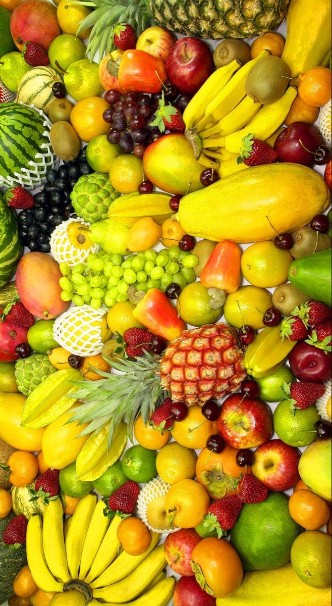
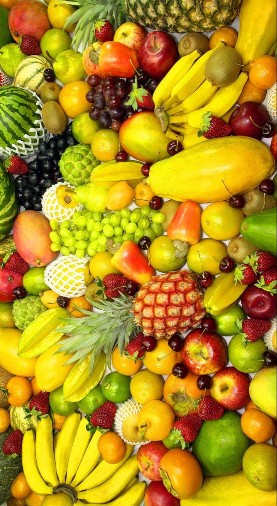

Fresh, Organic, and Healthy - Straight from our farm to your table.
Sustainably grown, chemical-free, and packed with nutrients. Enjoy farm-fresh organic produce.
Welcome to GreenHarvest Organics 🌿
At GreenHarvest Organics, we believe in the power of nature to provide fresh, healthy, and chemical-free food. Based in Nairobi, Kenya, our farm is dedicated to producing high-quality organic fruits, vegetables, and dairy products using sustainable and eco-friendly farming practices.
Our Mission
Our mission is simple: to bring farm-fresh organic produce straight to your table, ensuring you and your family enjoy the healthiest, most nutritious food possible. We are committed to promoting healthy living, environmental sustainability, and supporting local communities through ethical farming.
Certified Organic & Trusted Quality
We follow strict organic farming guidelines and are certified by [Insert Certification Body], ensuring that our products are free from synthetic chemicals, pesticides, and GMOs. Our commitment to quality guarantees that every bite you take is pure, natural, and packed with nutrients.
Farm Tours & Community Engagement
We believe in transparency and education, which is why we welcome visitors to experience our farm firsthand. Our guided farm tours allow customers to see where their food comes from, learn about organic farming methods, and even take part in farm activities. Schools, families, and businesses are all welcome!
Partnerships & Collaborations
We are proud to work with local farmers, eco-conscious businesses, and nutritionists to promote organic agriculture and healthy eating. We also supply organic produce to restaurants, hotels, and wellness stores, helping more people access fresh, organic food. With a focus on quality, freshness, and sustainability, we offer a variety of organic products available for direct home delivery. Whether you’re looking for farm-fresh vegetables, seasonal fruits, or organic dairy, GreenHarvest Organics is your trusted source for natural, wholesome food. 💚 Eat Fresh, Live Healthy, Choose Organic!
.jpeg)
.jpeg)
.jpeg)
.jpeg)
.jpeg)
 
